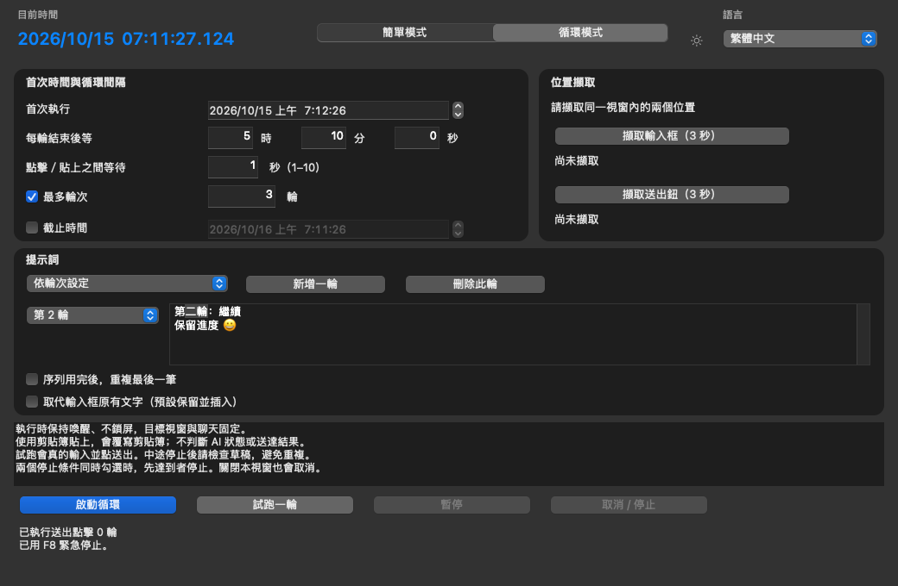
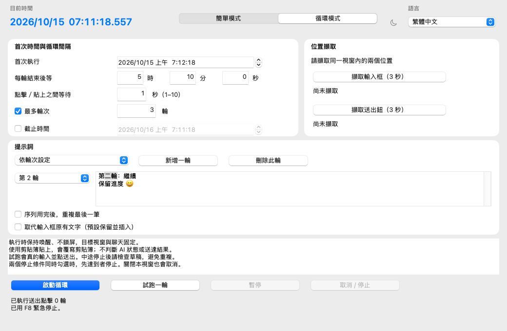

Stable vs preview
| Capability | Stable v1.1.2 | Preview 1.2.0-preview.2 |
|---|---|---|
| One scheduled single/double click | Available | Simple mode |
| Recurring prompt input and send | Unavailable | Loop mode |
| Five interface languages | Unavailable | System selection + manual switch |
| Manual light/dark switch | Unavailable; Mac follows appearance | Shared sun/moon action |
Preview download instructions · Candidate verification report. Mac native paste/send and F8 require local desktop validation; CI rendering alone is insufficient.
Mac preview: actual CI renders
Traditional Chinese loop mode on macOS 15, with sample text entered by the UI fixture. These renders verify layout; they do not demonstrate delivery to another app.


Set up a bounded loop
- Keep the computer awake and unlocked, with the intended app and chat visible in a fixed position.
- Open Loop mode in the shared ScheduledClicker window. Choose the first execution time.
- Set the wait after each round completes, and the delay between focus, paste and send actions.
- Choose one prompt every round or a sequence. For a sequence, choose whether to repeat the final prompt; otherwise stop when it runs out.
- Set a maximum round count, a deadline, or both. If both apply, stop at the first reached. At least one bound is required.
- Capture the input field and Send button in the same target window. Choose whether to insert at the caret or replace the existing draft.
- Review the confirmation. Test one round against a disposable target before using a real chat.
What happens each round?
Focus the captured input position → wait → paste the prompt → wait → click Send → wait the configured interval. For example, a five-hour interval starts after the round finishes; it is not aligned to a provider reset clock.
Pause, cancel and draft handling
During the between-round wait, Pause preserves the remaining wait and Resume continues it; the deadline still applies. If a round has already started, pressing Pause stops the loop instead of creating a resumable mid-round state. Inspect the draft before starting a new schedule. Cancel or F8 (Fn+F8 on some Macs) stops remaining work. Close also cancels. Already-pasted text and completed clicks cannot be undone, so inspect the target draft before restarting. Stop an active operation before switching modes.
Five languages and two appearances
Chinese system locales select Traditional Chinese; Japanese, Korean and German select their matching interface. Other locales select English. The shared language picker can change this during the session. Startup reads the system light/dark appearance, and the sun/moon action overrides it until restart. Prompt text stays as entered.
Clipboard and permission boundaries
The loop overwrites the clipboard and does not restore previous contents. Text can remain in clipboard history or the target app. macOS requires user-granted Accessibility permission for native input. Fixed coordinates and window checks cannot recognize a changed chat or prove successful delivery. See safety and verification.
循環模式使用重點
先設定首次時間、每輪結束後的等待間隔，再選擇每輪相同或依輪次設定提示詞。輸入框與送出鈕必須擷取自同一個視窗，至少設定輪數或截止時間之一。試跑會真的貼上並送出，剪貼簿會被覆寫；停止後先檢查草稿再重啟。本工具不判斷 AI 是否完成、額度是否恢復或訊息是否送達。
Common questions
Does ScheduledClicker support repeating prompts?
The 1.2.0-preview.2 candidate adds bounded recurring prompt input and send clicks. Released v1.1.2 supports one scheduled click only. Use the preview download instructions for loop mode.
How does the loop interval work?
Choose the first execution time and a wait interval measured from the completion of each round. Use one prompt every round or a prompt sequence. A maximum round count or deadline is required; if both are selected, the first reached stops the loop.
Which interface languages are available in the preview?
Traditional Chinese, English, Japanese, Korean and German. Chinese system locales, including Simplified Chinese, select the Traditional Chinese interface. Japanese, Korean and German select their own language; all other locales select English. You can switch languages in either mode.
Does the preview follow my system light or dark appearance?
Yes. It reads the system appearance when the app starts. The shared sun/moon button changes both modes for the current session; restarting reads the system preference again.
Will the loop detect an AI reply or a usage reset?
No. It performs timed input and clicks at captured positions. It cannot detect AI completion, quota availability, changed chats or successful delivery. Choose the interval yourself and keep the target layout unchanged.
Does loop mode use the clipboard?
Yes. It overwrites the clipboard to paste prompts and does not restore the previous contents. Prompts may remain in clipboard history or the target app. Trial mode sends real input; stopping cannot undo a completed paste or click.